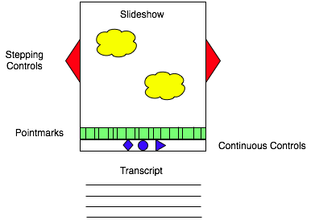

I Hope Someone Has Already Built This
Over the next few months, I want to experiment with at least four new learning formats for Software Carpentry. The baseline is what we have now: each topic is covered in 6-10 lessons, each of which has its own page. Most of those pages have a voice-over-slideshow video lasting 5 to 10 minutes and the slides themselves as PNG images in parallel with a transcript of the voiceover; the exceptions are the lessons on spreadsheets, databases, and debugging, which are actual screencasts of the appropriate tools in action. Only a handful of topics have exercises, and the only way to give feedback is to comment on the page.
Here’s what I want instead:

Superficially, it isn’t much different from what we have The “Slideshow” area shows the current diagram, code snippet, or whatever. The “Continuous Controls” (the usual forward, pause, and rewind) control the synchronized slideshow and audio track, while the “Stepping Controls” allow users to move forward and back a slide at a time, and the “Pointmarks” show where slide transitions take place. Finally, the “Transcript” is, as its name suggests, a transcript of the audio that accompanies the current slide.
The big difference doesn’t show up in this diagram. In this version, the slides are not PNG images, an MP4 video, or any other paint-by-pixel format. Instead, they are SVGs stored right in the body of the web page, so that their content is visible to search engines, and can be copied and pasted in sensible ways. This means that if the current “slide” is showing some code, the user can pause the show, select that text, and paste it into her own editor. She can do similar things with the diagrams, i.e., select a cloud, shift-select the caption, and paste them both into her favorite image tool, rather than having to select a rectangular block of anti-aliased pixels that happen to look like lines and letters to a human eye.
I haven’t built this yet, but I think it should be fairly straightforward: each “slide” is a div with a unique ID containing an image and a block of text. The audio is linked from the page; a data-* attribute in each slide div has its start time, and a bit of Javascript shows the right slide at the right time. Marking start times will be a bit tedious–I think it’ll have to be done by hand, at least for now–but it should be easy to allow people to add and view comments and questions in place, instead of tacking them all onto the bottom of the page. And displaying an all-in-one view of the slides with appropriate bits of transcript for printing (or for people who just want to browse) will be easy.
This is just a start, of course. I haven’t said anything about (self-)assessment, which is crucial to real learning, or about accessibility (although I think that having all the code and captions in the page as first-class text will help a lot). I also haven’t thought yet about whether I can build this in just one week, which is about as much time as I have, because there’s one question I should ask first:
If so, I’d be very grateful for a pointer.